144 locations · 10 cities
All locations
Every city, district and landmark in the dataset, grouped by game, plus an index of which cities recur across the series.
- Locations
- 144
- Cities
- 10
- Games covered
- 17
- Largest
- San Andreas
locations.json — flat list with parents
Cities across the series
Declared settings per game, with the number of location records that name the city directly.
| City | Games | Location records | Appears in |
|---|---|---|---|
| Liberty City | 8 | 34 | Grand Theft Auto, Grand Theft Auto III, Grand Theft Auto Advance, Grand Theft Auto: Liberty City Stories, Grand Theft Auto IV, Grand Theft Auto IV: The Lost and Damned, Grand Theft Auto: The Ballad of Gay Tony, Grand Theft Auto: Chinatown Wars |
| Vice City | 4 | 10 | Grand Theft Auto, Grand Theft Auto: Vice City, Grand Theft Auto: Vice City Stories, Grand Theft Auto VI |
| Los Santos | 3 | 18 | Grand Theft Auto: San Andreas, Grand Theft Auto V, Grand Theft Auto Online |
| Blaine County | 2 | 7 | Grand Theft Auto V, Grand Theft Auto Online |
| London | 2 | 5 | Grand Theft Auto: London 1969, Grand Theft Auto: London 1961 |
| Anywhere City | 1 | 4 | Grand Theft Auto 2 |
| Las Venturas | 1 | 3 | Grand Theft Auto: San Andreas |
| Leonida | 1 | 2 | Grand Theft Auto VI |
| San Andreas | 1 | 1 | Grand Theft Auto |
| San Fierro | 1 | 5 | Grand Theft Auto: San Andreas |
Locations by game
Grand Theft Auto 1997
Game location pagelocations.json
| Image | Location | Type | Parent area |
|---|---|---|---|
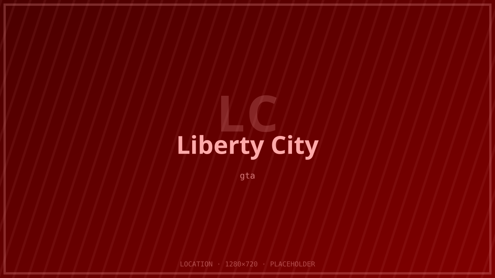 | Liberty City | City | — |
 | San Andreas | City | — |
 | Vice City | City | — |
Grand Theft Auto: London 1969 1999
Game location pagelocations.json
| Image | Location | Type | Parent area |
|---|---|---|---|
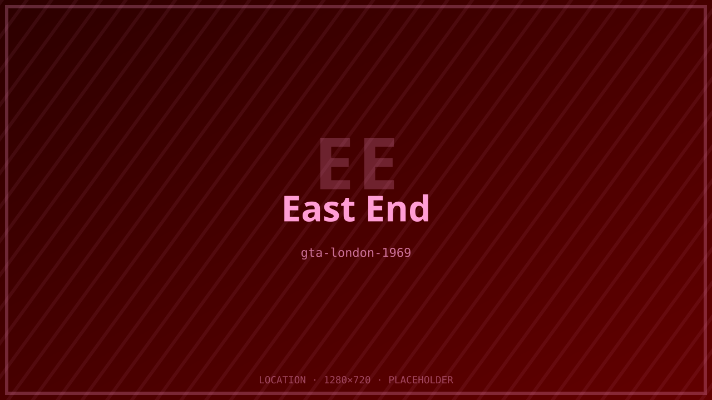 | East End | District | London |
 | London | City | — |
 | Soho | District | London |
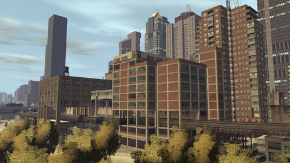 | Westminster | District | London |
Grand Theft Auto: London 1961 1999
Game location pagelocations.json
| Image | Location | Type | Parent area |
|---|---|---|---|
 | London | City | — |
Grand Theft Auto 2 1999
Game location pagelocations.json
| Image | Location | Type | Parent area |
|---|---|---|---|
 | Anywhere City | City | — |
 | Downtown | District | Anywhere City |
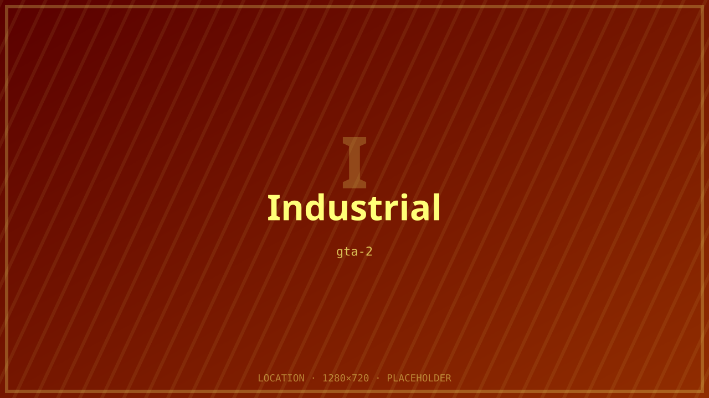 | Industrial | District | Anywhere City |
 | Residential | District | Anywhere City |
Grand Theft Auto III 2001
Game location pagelocations.json
| Image | Location | Type | Parent area |
|---|---|---|---|
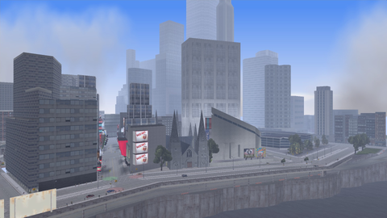 | Bedford Point | District | Staunton Island |
 | Belleville Park | District | Staunton Island |
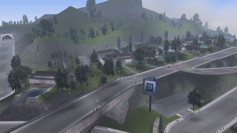 | Cedar Grove | District | Shoreside Vale |
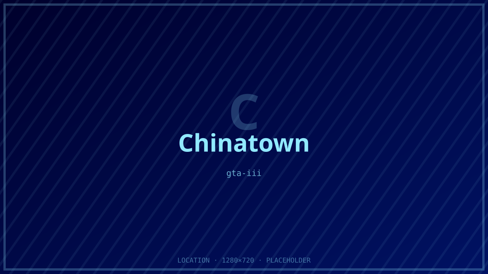 | Chinatown | District | Portland |
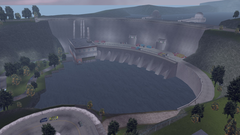 | Cochrane Dam | Landmark | Shoreside Vale |
 | Francis International Airport | Landmark | Shoreside Vale |
 | Harwood | District | Portland |
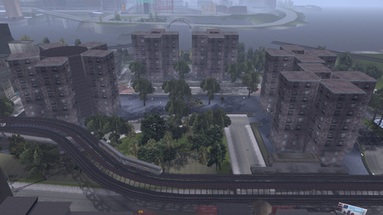 | Hepburn Heights | District | Portland |
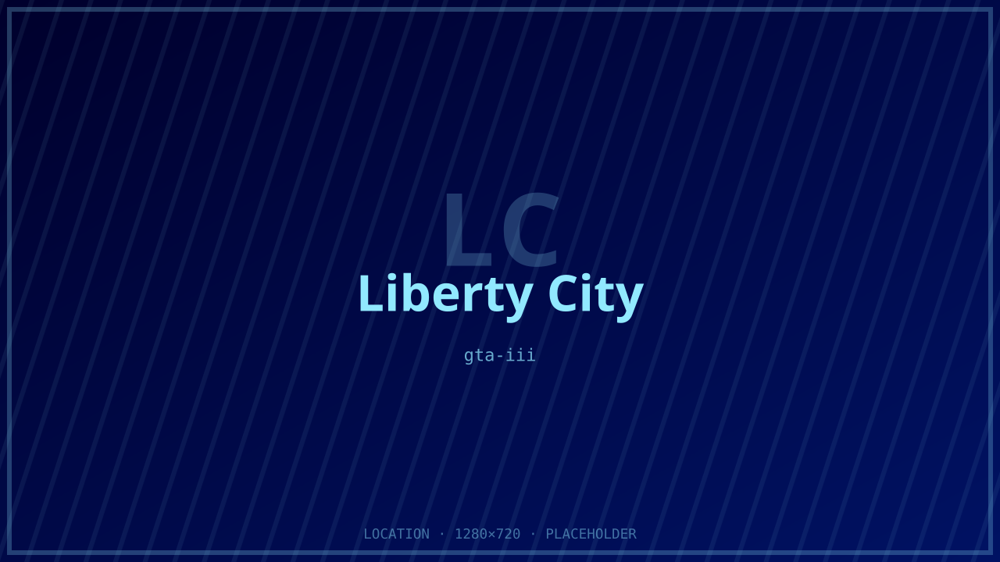 | Liberty City | City | — |
 | Pike Creek | District | Shoreside Vale |
 | Portland | Island | Liberty City |
 | Red Light District | District | Portland |
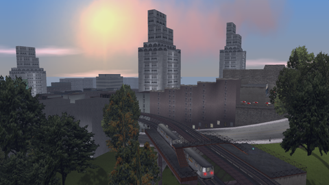 | Saint Mark's | District | Portland |
 | Shoreside Vale | Island | Liberty City |
 | Staunton Island | Island | Liberty City |
 | Torrington | District | Staunton Island |
 | Trenton | District | Portland |
 | Wichita Gardens | District | Shoreside Vale |
Grand Theft Auto: Vice City 2002
Game location pagelocations.json
| Image | Location | Type | Parent area |
|---|---|---|---|
| Downtown | Neighbourhood | Vice Mainland | |
 | Escobar International Airport | Landmark | Vice Mainland |
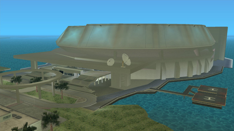 | Hyman Memorial Stadium | Landmark | Downtown |
| Little Cuba | Neighbourhood | Vice Mainland | |
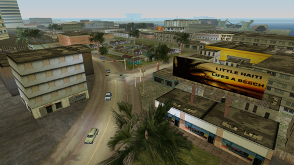 | Little Haiti | Neighbourhood | Vice Mainland |
 | Little Havana | Neighbourhood | Vice Mainland |
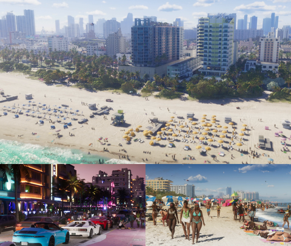 | Ocean Beach | Neighbourhood | Vice Beach |
 | Prairie Avenue | Landmark | Vice Beach |
 | Starfish Island | Island | Vice City |
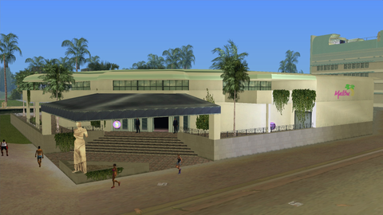 | The Malibu Club | Landmark | Vice Point |
 | Vice Beach | Island | Vice City |
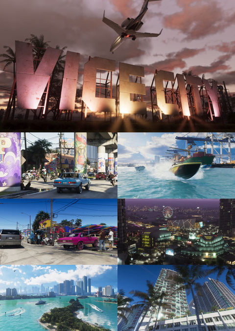 | Vice City | City | — |
 | Vice City Mainland | Island | Vice City |
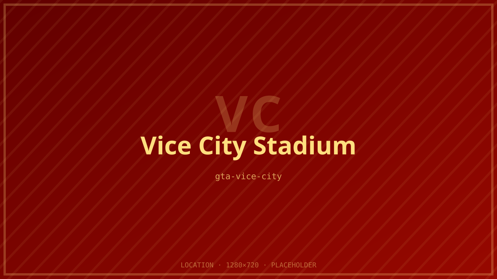 | Vice City Stadium | Landmark | Downtown |
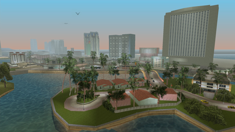 | Vice Point | Neighbourhood | Vice Beach |
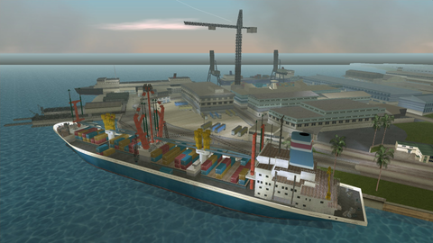 | Vice Port | District | Vice Mainland |
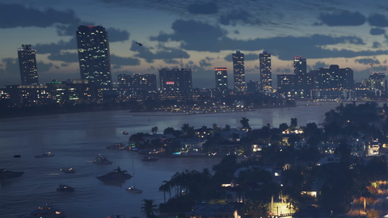 | Washington Beach | Neighbourhood | Vice Beach |
Grand Theft Auto: San Andreas 2004
Game location pagelocations.json
| Image | Location | Type | Parent area |
|---|---|---|---|
 | Area 69 | Landmark | San Andreas |
 | Bone County | Region | San Andreas |
 | Caligula's Palace | Landmark | Las Venturas |
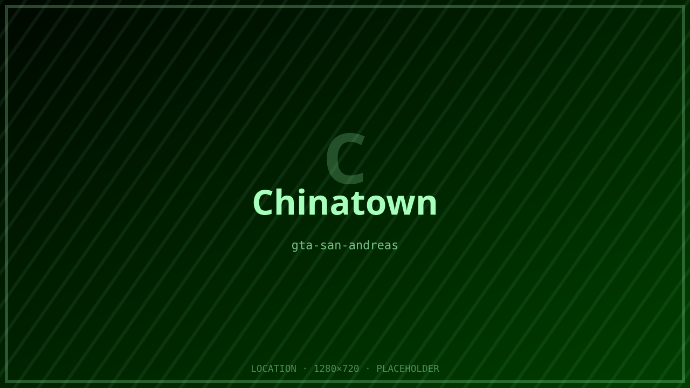 | Chinatown | Neighbourhood | San Fierro |
 | Doherty | Neighbourhood | San Fierro |
 | East Los Santos | District | Los Santos |
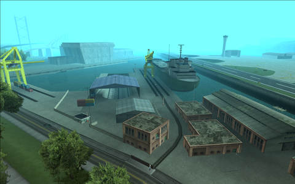 | Easter Basin | District | San Fierro |
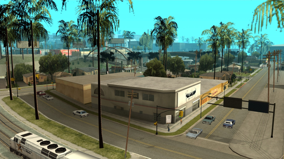 | Ganton | Neighbourhood | Los Santos |
 | Glen Park | Neighbourhood | Los Santos |
 | Idlewood | Neighbourhood | Los Santos |
 | Jefferson | Neighbourhood | Los Santos |
 | Las Venturas | City | San Andreas |
 | Los Santos | City | San Andreas |
 | Los Santos International Airport | Landmark | Los Santos |
| Mount Chiliad | Landmark | San Andreas | |
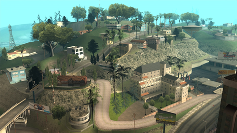 | Mulholland | Neighbourhood | Los Santos |
 | Pier 69 | Landmark | San Fierro |
| San Andreas | Region | — | |
 | San Fierro | City | San Andreas |
 | The Strip | District | Las Venturas |
 | Verdant Meadows | Landmark | San Andreas |
 | Whetstone | Region | San Andreas |
Grand Theft Auto Advance 2004
Game location pagelocations.json
| Image | Location | Type | Parent area |
|---|---|---|---|
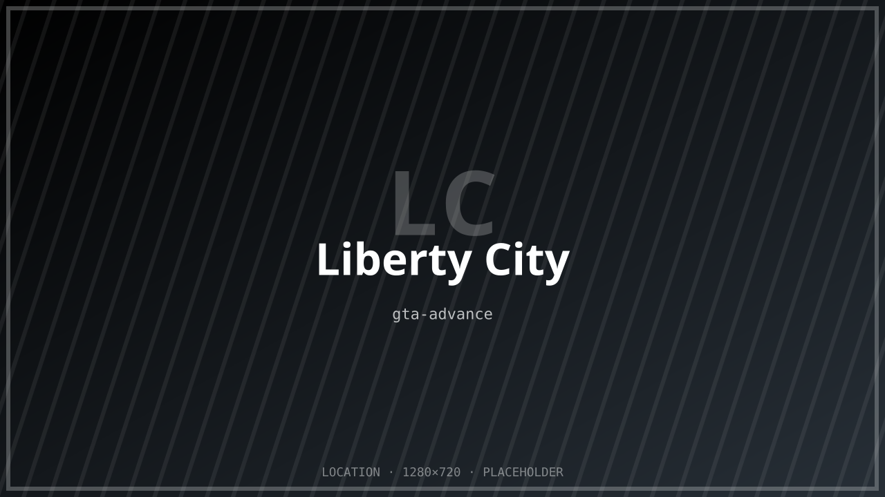 | Liberty City | City | — |
 | Portland | Island | Liberty City |
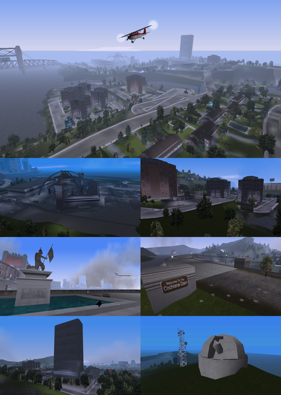 | Shoreside Vale | Island | Liberty City |
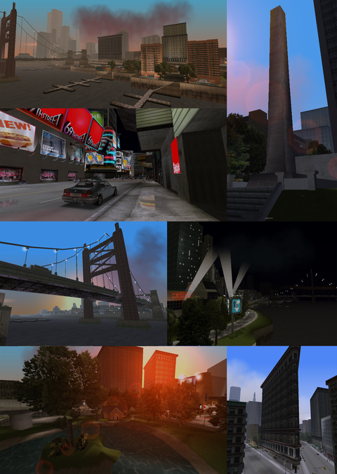 | Staunton Island | Island | Liberty City |
Grand Theft Auto: Liberty City Stories 2005
Game location pagelocations.json
| Image | Location | Type | Parent area |
|---|---|---|---|
 | Atlantic Quays | District | Portland |
 | Belleville Park | District | Staunton Island |
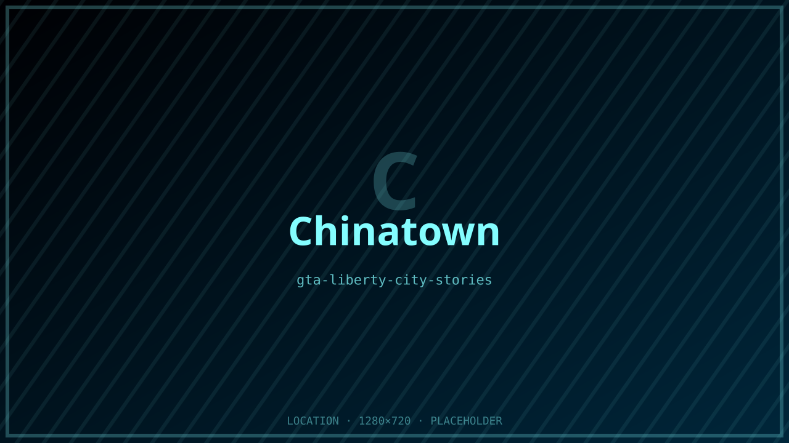 | Chinatown | District | Portland |
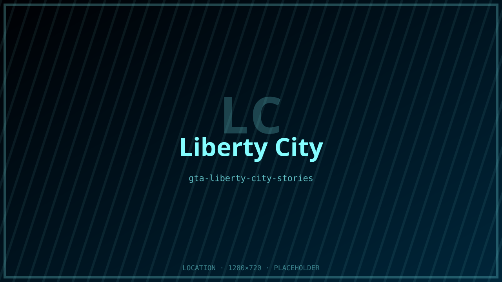 | Liberty City | City | — |
 | Portland | Island | Liberty City |
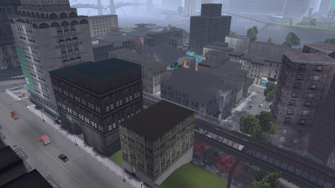 | Red Light District | District | Portland |
 | Saint Mark's | District | Portland |
 | Shoreside Vale | Island | Liberty City |
 | Staunton Island | Island | Liberty City |
 | Torrington | District | Staunton Island |
Grand Theft Auto: Vice City Stories 2006
Game location pagelocations.json
| Image | Location | Type | Parent area |
|---|---|---|---|
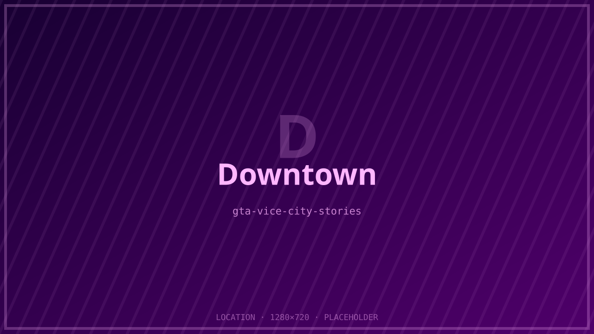 | Downtown | Neighbourhood | Vice Mainland |
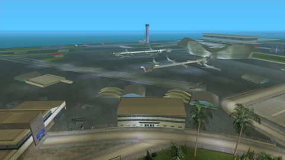 | Escobar International Airport | Landmark | Vice Mainland |
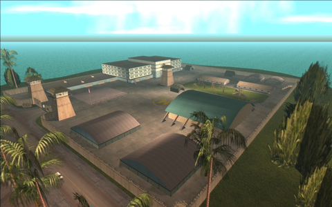 | Fort Baxter | Landmark | Vice Mainland |
 | Little Haiti | Neighbourhood | Vice Mainland |
 | Little Havana | Neighbourhood | Vice Mainland |
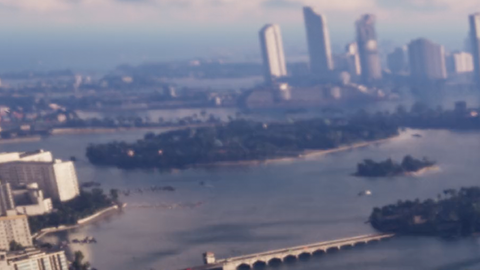 | Starfish Island | Island | Vice City |
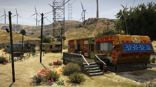 | Trailer Park | District | Vice Mainland |
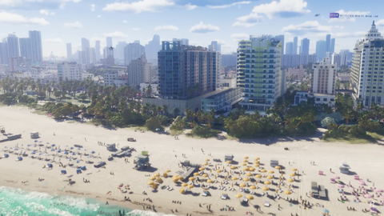 | Vice Beach | Island | Vice City |
 | Vice City | City | — |
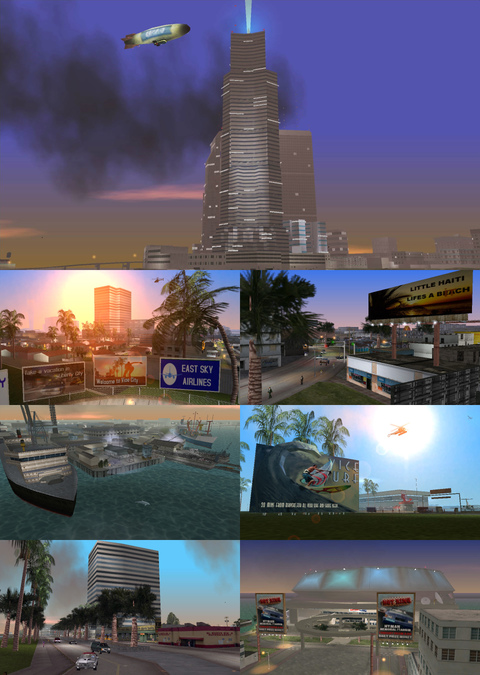 | Vice City Mainland | Island | Vice City |
Grand Theft Auto IV 2008
Game location pagelocations.json
| Image | Location | Type | Parent area |
|---|---|---|---|
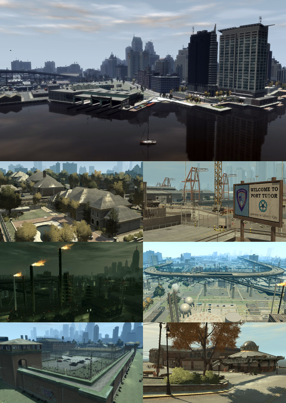 | Alderney | State | Liberty City |
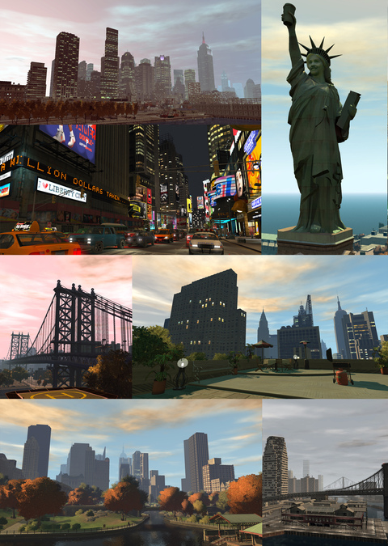 | Algonquin | Borough | Liberty City |
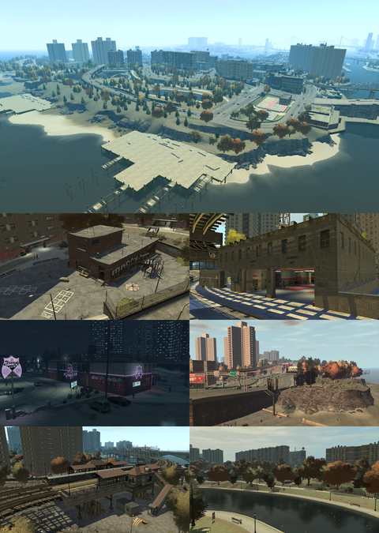 | Bohan | Borough | Liberty City |
 | Broker | Borough | Liberty City |
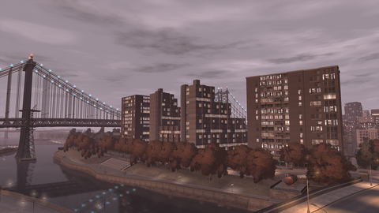 | Colony Island | Island | Liberty City |
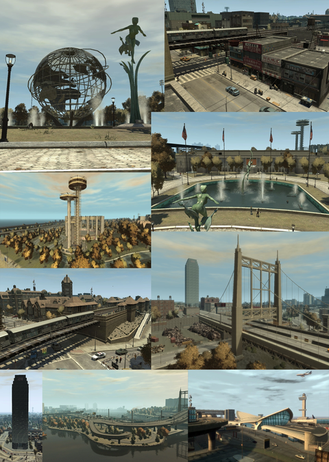 | Dukes | Borough | Liberty City |
 | Francis International Airport | Landmark | Dukes |
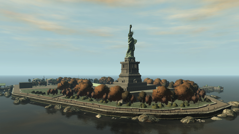 | Happiness Island | Island | Liberty City |
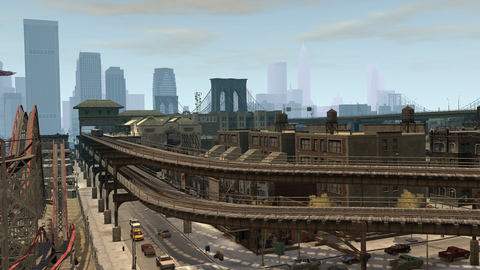 | Hove Beach | Neighbourhood | Broker |
| Libertonian Museum | Landmark | Algonquin | |
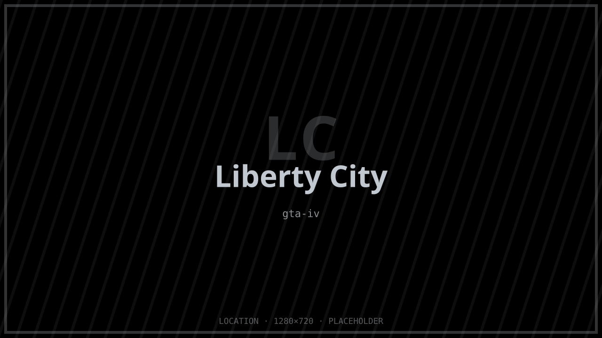 | Liberty City | City | — |
 | North Holland | Neighbourhood | Algonquin |
Grand Theft Auto IV: The Lost and Damned 2009
Game location pagelocations.json
| Image | Location | Type | Parent area |
|---|---|---|---|
 | Acton Hill | Neighbourhood | Alderney |
 | Alderney | State | Liberty City |
 | Algonquin | Borough | Liberty City |
 | Bohan | Borough | Liberty City |
 | Broker | Borough | Liberty City |
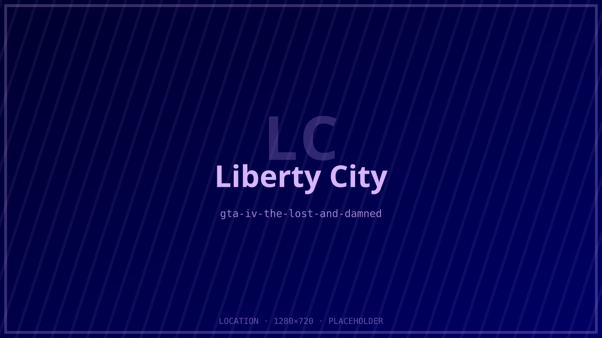 | Liberty City | City | — |
Grand Theft Auto: The Ballad of Gay Tony 2009
Game location pagelocations.json
| Image | Location | Type | Parent area |
|---|---|---|---|
 | Alderney | State | Liberty City |
 | Algonquin | Borough | Liberty City |
 | Bohan | Borough | Liberty City |
| Hercules | Landmark | Algonquin | |
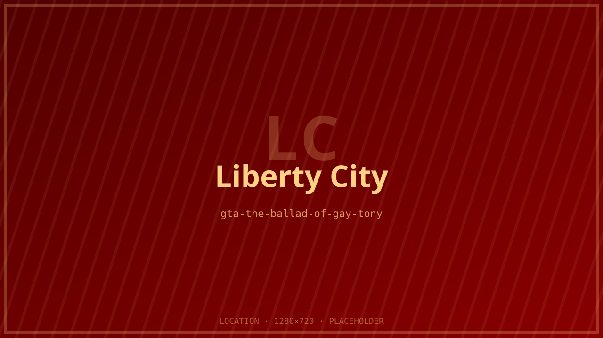 | Liberty City | City | — |
| Maisonette 9 | Landmark | Algonquin | |
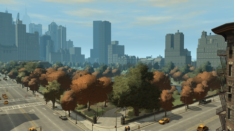 | Middle Park | Landmark | Algonquin |
Grand Theft Auto: Chinatown Wars 2009
Game location pagelocations.json
| Image | Location | Type | Parent area |
|---|---|---|---|
 | Chinatown | District | Portland |
 | Liberty City | City | — |
 | Portland | Island | Liberty City |
 | Shoreside Vale | Island | Liberty City |
 | Staunton Island | Island | Liberty City |
Grand Theft Auto V 2013
Game location pagelocations.json
| Image | Location | Type | Parent area |
|---|---|---|---|
 | Blaine County | Region | San Andreas |
 | Chamberlain Hills | Neighbourhood | Los Santos |
 | Downtown Los Santos | District | Los Santos |
 | Fort Zancudo | Landmark | Blaine County |
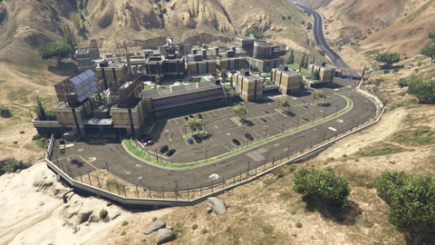 | Humane Labs and Research | Landmark | Blaine County |
 | Los Santos | City | San Andreas |
 | Mount Chiliad | Landmark | Blaine County |
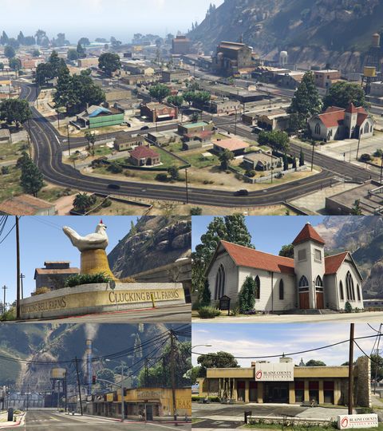 | Paleto Bay | Town | Blaine County |
| Rockford Hills | District | Los Santos | |
 | San Andreas | Region | — |
| Sandy Shores | Town | Blaine County | |
 | Union Depository | Landmark | Los Santos |
 | Vespucci | District | Los Santos |
 | Vinewood | District | Los Santos |
Grand Theft Auto Online 2013
Game location pagelocations.json
| Image | Location | Type | Parent area |
|---|---|---|---|
 | Blaine County | Region | San Andreas |
 | Cayo Perico | Island | — |
 | Los Santos | City | San Andreas |
| Los Santos International Airport | Landmark | Los Santos | |
| The Diamond Casino & Resort | Landmark | Los Santos |
Grand Theft Auto VI 2026
Game location pagelocations.json
| Image | Location | Type | Parent area |
|---|---|---|---|
| Leonida | Region | — | |
 | Vice City | City | Leonida |